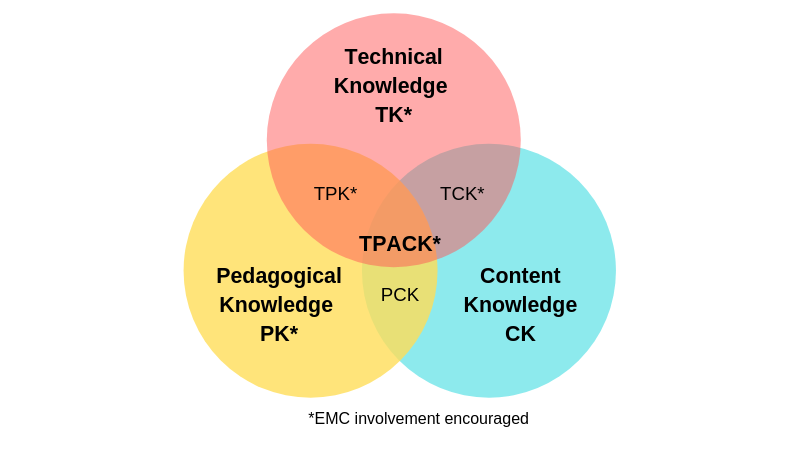

Hello I'm Cecily Cox!
|
 |
|
|
About Cecily |
TPACK Summary |
|
Reflection |
Kahoot! |
|
|
|
|
iMovie |
Garage Band |
|
|
|
|
PowerPoint |
Padlet |
About Cecily
My name is Cecily Cox,
I am very excited about the opportunity to teach and hope to teach all subjects in elementary education. I would be honored to impact the life of a child in the crucial years of early education, and I hope you will consider me for an elementary teaching position.
I earned my Bachelor of Arts degree from Southern Methodist University, where I received a degree in Human Rights and Sociology. Since graduating, I have worked for political campaigns, developing and implementing voter engagement strategies. I have also worked as a swim instructor, student taught as a volunteer in a fourth-grade classroom, taught second-grade elementary school in the Diocese of San Jose, and currently, I teach first grade in the Diocese of Oakland. During this time, I learned the basics of differentiated instruction, classroom management, and core curriculum. These opportunities gave me incredible hands-on experience and solidified my love of educating children and my ability to manage a large classroom.
I have also participated in study abroad programs in France, China, Korea, and Israel. I have a strong grasp of Spanish, French, and Latin, which gives me a unique advantage when it comes to appreciating different cultures and understanding the different learning styles of English Language Learners
I am currently enrolled in the Master of Teaching program at Santa Clara University, where I am working on a cross-disciplinary qualification in early education. I hope to obtain this qualification in the next two years. I am eager to teach, but also inspired to learn more about the educational process and the development of young minds.
cecox@scu.edu
Kahoot!
Students: host your own learning experiences!
Kahoot is a student-centered learning platform and content hub designed to help students to take an active role in their education through powerful play.
We can use Kahoot! in the classroom to:
- Engage the class with interactive lessons
- Access ready-to-play learning content by subject and grade
- Get instant feedback from every student in the class
- Track learning progress over time for formative assessment
- Foster creativity and teamwork to turn learners into leaders
| Standards |
|---|
|
Grade: First HSS: HSS-1.1 Students describe the rights and individual responsibilities of citizenship. HSS-1.1.2 Students describe the rights and individual responsibilities of citizenship. RL.1.9 Compare and contrast the adventures and experiences of characters in stories. |
| Objective |
| Students will understand the meaning of patriotism and learn about the ways people show patriotism. |
| Vocabulary |
| Patriotism, patriotic symbols, symbols, Statue of Liberty, Bald Eagle, Liberty Bell, The White House, The Capitol Building, Monuments, and Memorials. |
| Materials |
|
| Technology |
|
| Teacher will: |
|
Opening KWL Chart - I will have an anchor chart and draw a 3 column diagram and label each column with a K, W, and L. I will then ask the students to discuss out loud what they believe patriotism is. I will write down their thoughts in the K (know) chart. Then I will ask students what they want to know about patriotism. Then I will write down the questions they have on the W (Want to know chart). I will give students a definition of patriotism, read the book via Youtube What it means to be American and show videos to help students come up with an idea of what patriotism could mean: Afterwards, we will write on the L chart what we learned from the videos. We will then read the California Social Studies Weekly on Patriotism. Teacher will ask students to discuss what they see on the cover of the Social Studies weekly reader. Students will compare and contrast monuments vs memorials and delve deeper into some of the stories regarding this nation's most notable monuments. |
| Formative assessment: |
| Ongoing observations of students answering questions, working with partners (conversing with them), working in table groups to discuss questions asked by teacher and/or other students, and asking questions to better their understanding. |
| Summative assessment: |
|
First Grade Studies Weekly Assessment, and Kahoot game results The Kahoot Game asks questions about each topic we went over in class. It provides students with a multiple choice game where teachers can track their progress and view which questions they got wrong and which they got correct. Students are able to use this Kahoot game using the link at home for homework, and review of the upcoming test. |
| UDL: |
|
For students with learning disabilities, Kahoot provides a flexible environment for students to learn the material. It also does not require any writing and they will be able to participate more fully with the lesson. Engagement: Foster collaboration and community by using the feature that has students join teams to compete on who can answer the most questions on Kahoot. Representation: Kahoot offers ways of customizing the display of information in an online format. Action and Expression: Students will vary the methods for response and navigation as Kahoot offers the option of giving multiple choice, true false, and open ended questions so students have options to answer their questions. |
iMovie
Turn your videos into movie magic
With iMovie, it’s never been easier to create memorable, cinema-quality videos and let your imagination run wild. Edit videos on the fly or explore iMovie on your Mac. Design your masterpiece from scratch or get help shaping your story with the new Magic Movie and Storyboards on iPhone or iPad.
Watch an iMovie I created
| Standards |
|---|
|
RL.1.1 Ask and answer questions about key details in a text. |
| Objective |
| Students will understand the Gifts of Love given by God -- faith, hope, and love -- and learn skills on how to share that love with others around them. |
| Vocabulary |
| Great Commandment, parable, commandment. |
| Materials/Resources |
| Call to Faith textbook. |
| Teacher will: |
|
Teacher Will: Use Chapter 8 of “Call to Faith” to guide teaching. Teach chapter key concepts while working through the chapter throughout the week -- Chapter 8 -- Jesus Loves. Students Will: Explore the Great Commandment and how to share God's love with others on earth. Students will review the Great Commandments on pages 110 - 111. Students will learn about showing love on 112 - 113. Students will then write letters to a loved one of their choice, and record themselves on iMovie reading the letter. Students will watch videos via Youtube to understand the process the structure of iMovie. Students have the ability to add sound, photos, and effects using iMovie. At the end of the week, the teacher will show the movies to the class and discuss how these letters show love to the ones they appreciate most. |
| Technology: Youtube tutorials: |
| Formative assessment: |
|
Verbal responses to teacher’s questions and explanation of concepts to table groups and/or partners. |
| Summative assessment: |
|
iMovie Presentation
|
| UDL: |
|
Engagement: Students would be able to optimize individual choice and autonomy by being able to create their own video. They would be able to add their own effects to their liking and creativity levels. This would be beneficial for students who learn differently as they are not structured to standard reading and writing, they would be able to read their letters and work on their public speaking. This is especially helpful to students who have trouble writing. These students would have the option to only record their letter instead of writing it down first. Representation: Students would be able to demonstrate their letters through multiple media forms as they would be able to use auditory, visual, and vocal performances. Also, students who tend to write well are able to write their letters first and then read them to the camera. Action and Expression: Students would be able to use multiple tools for construction and composition. For example, students can write their letters physically and then read their letters, and also can verbalize their letters directly to the iMovie recorder. |
GarageBand
Incredible music. In the key of easy.
GarageBand is a fully equipped music creation studio right inside your Mac — with a complete sound library that includes instruments, presets for guitar and voice, and an incredible selection of session drummers and percussionists. With an intuitive, modern design, it’s easy to learn, play, record, create, and share your hits worldwide. Now you’re ready to make music like a pro.
| Standards |
|---|
|
Grade: First RF.1.2.B Orally produce single-syllable words by blending sounds (phonemes), including consonant blends. |
| Objective |
| Students will be able to identify rhyming words and orally perform a rhyming poem. |
| Vocabulary |
|
Rhyme
|
| Materials |
|
| Teacher will: |
|
Opening: Introduce the concept of rhyming words to your students. Explain that rhyming words are words that have the same ending sounds. For example, "cat" and "hat" are rhyming words. Teacher will then read aloud some entries from the book of nursery rhymes, and emphasize the rhyming words as you go along. After each rhyme, ask students to tell you what rhyming words they noticed. Teacher modeling (30 minutes) Read aloud Hop on Pop by Dr. Seuss. As with did with the book of nursery rhymes, emphasize whatever rhyming words you come across. Pause occasionally, and ask students to identify any rhyming words they've noticed. Teacher will bring out the cards from the flashcard set, and mix them up. Students will be given rhyming cards and they have to find their partner who has the word that rhymes with the card they were presented with. Students will distribute different My Rhyming Book worksheets to each student. Have students work on completing their pages. Students will then watch a Youtube video, which explains to beginners/kids how to use the basic features of Garageband: Students will then be shown how to create and record a short rhyming poem. As a class, we will then write a short rhyming poem and record it on Garageband. Finally, the students will be paired up into groups of 4 and use their iPads to create a song or poem, which would be recorded on Garageband. At the end of the week, we will listen to all recordings, and students will clap for each student that has presented their audio project. |
| Differentiation Enrichment |
|
Advanced students can be given an extra assignment. Have them read Hop on Pop on their own and write down all of the rhyming words in the book. Support: Have one-on-one review sessions with struggling students. Go over different pairs of rhyming words with them to make sure they understand the concept of end rhymes. Assessment (10 minutes) Distribute pencils and sheets of paper to the class. Ask each student to write down three pairs of rhyming words on his sheet. Then, ask students to write down as many examples of rhyming words from Hop on Pop as they can. Collect the sheets and look over them after the lesson to assess each student's understanding of the material. Review and closing (5 minutes) Remind students of the definition of rhyming words: words that have the same ending sounds. Tell them that most songs, nursery rhymes, and poems have rhyming words. Advise them to keep their eyes and ears open for rhyming words whenever they listen to songs or read poetry. |
| UDL: |
|
Engagement: Students will foster collaboration and community. Students will be paired in groups with students of varying abilities. Together, students must work together to come up with a few sentences that rhyme. They will then have to work together to record an audio file of their poem using Garageband. This is beneficial for some students who may be uncomfortable writing, this gives them the opportunity to work orally. Furthermore, students who do struggle occasionally will have other students to speak with and ask questions and discuss creative options for the audio files. Representation:Offer alternatives for auditory information. In addition to the video, which explains how to use Garageband, there will be a handout that will go along with the video for students who learn best by reading information instead of learning from audio files. Additionally, the nursery rhymes will also be printed out for students who learn best by reading information instead of audio files. Action and Expression:Use multiple media for communication. Students will be given handouts, videos, and a lecture to understand how to compose an audio file to record their rhyming sentences, which helps instruct students who learn in different ways as it offers different types of learners various ways to garner information on how to rhyme and use Garageband. |

Microsoft PowerPoint
Create great presentations in Microsoft Powerpoint
The PowerPoint app gives you access to the familiar slideshow maker tool you already know. Create, edit, view, present, or share presentations quickly and easily from anywhere.
| Standards: |
|---|
|
HSS-1.3 Students know and understand the symbols, icons, and traditions of the United States that provide continuity and a sense of community across time. RL.1.7 Use illustrations and details in a story to describe its characters, setting, or events. RL.1.3 Describe characters, settings, and major events in a story, using key details. |
| Objective |
| Students will identify one example of patriotism or an example that has to do with California's history. |
| Vocabulary |
| pledge, allegiance, culture, landmarks, monuments |
| Materials/Multi-Media Resources: |
|
| Teacher will: |
| Ask the students to predict what they think the lesson is about by showing them the Study's Weekly magazine. They will then discuss what they see in the picture. Ask them to read the title. Discuss the meaning of 'patriotism' and 'allegiance'. Ask the students to think about which pictures show a monument and which picture shows a landmark. Teacher will continue through PowerPoint defining the vocabulary and asking students to give examples or relevant stories that have to do with each slide. Ask the students if they know the song “Yankee Doodle” and "The Star Spangled Banner", teacher will play those songs for students and explain that these are patriotic songs. Teacher will use the activities on the back of the article to review the material presented and as an informal assessment of the students’ knowledge and understanding of the content presented in this issue. Teacher will then give students an example of a Powerpoint slide that gives one example of patriotism. Students will then have access to PowerPoint via Ipad, and work with a partner to create one slide with either a photo, audio, or video that explains their favorite patriotic thing. |
| Technology: Blended Learning Groups & apps |
|
Technology will be integrated using Social Studies Weekly to pull up the issue onto the SmartBoard, also, Powerpoint will be used so the students can create their own slides of patriotic symbols. |
| Formative Assessment: |
|
Ongoing observations of students answering questions, working with partners (conversing with them), working in table groups to discuss questions asked by the teacher and/or other students, and asking questions to better their understanding. |
| Summative Assessment: |
|
Week 9 Social Studies Weekly Assessment, Questions (back of issue) that reviews the concepts taught in the Social Studies Weekly Reader. Powerpoint created on patriotism. |
| UDL: |
|
Engagement: Optimize individual choice and autonomy. Through the Powerpoint slide, students have the option of presenting their favorite things about patriotism through an individual choice of audio, video, or a visual picture. This individual choice will allow learners to participate in the design of classroom activities and will involve learners of different backgrounds and learning styles as they can involve their own personal touch to the assignment. Representation:Clarify vocabulary and symbols. Students will be offered a sheet of paper that defines the vocabulary. There will also be a Powerpoint slide that presents the vocabulary word and a picture, to help students who enjoy visual representation have a chance to associate a picture with the vocabulary word. This allows students a multitude of chances to absorb the information of the lesson in different ways, which offers students a large number of varieties to understand key vocabulary terms, despite different learning styles. Action and Expression:Vary methods for response and navigation: students will be able to use a variety of methods to display the knowledge that they learned through the PowerPoint slide, whether visually, through a picture, or auditorially through music. Students will also have the option to use the Voice to Text speech device through Powerpoint, which accommodates students who are ELL who might have trouble with spelling, and also students with learning disabilities who might find writing more difficult. |
Even if you’ve never used any kind of productivity software before, Padlet is familiar and fun
- Add posts with one click, copy-paste, or drag and drop
- Works the way your mind works - with sight, sound, and touch
- Changes are autosaved
- Simple link sharing allows for quick collaboration
- PowerPoint
- iPad
- Padlet
| Standards: |
|---|
|
Grade: First ELA Common Core Standard: RI1.1 Ask and answer questions about key details in text, RI1.2 Identify the main topic and retell key details of a text. |
| Objective: |
| I can identify and describe the main idea of a fiction book using key details |
| Materials: |
|
|
| Teacher will: |
|
Opening: Teacher will read a book. What will be done? The teacher will introduce the book “The Lion and the Mouse”. Students will review how the title and cover helps determine the main idea of the book. Students will look at Princess Lilly, each student will access Padlet on their iPads and type in their iPads or use voice-to-text to say what they think this story is about. Teacher will read “The Lion and The Mouse” while tracking print, discussing the front and back covers of books, discussing author and illustrator; and identifying characters and key details within the text. Students will then turn model tracking print by emphasizing left-to-right and top-to-bottom directions when reading; introduce punctuation; teach and review weekly high-frequency words. Students will then turn and talk to their elbow partner and discuss the main idea of the text. Students then have the option to change their Padlet answer on what the main details in the story are about. Students will then Complete the reader's notebook pages where they will refer back to the text and write 3 details they remember about the text. |
| Technology: |
|
Padlet, iPads. |
| Formative Assessment: |
|
Verbal responses to teacher’s questions and explanation of concepts to table groups, and/or partners/ thumbs up thumbs down using Padlet |
| Summative Assessment: |
|
Back To School Reader’s Notebook BTS1-BTS10. |
| UDL: |
|
Engagement: Students will foster collaboration and community by working with their elbow partner before they revise their Padlet. This helps students who thrive on speaking and engaging organize their thoughts verbally. Perception: Offers ways of customizing the display of information, instead of having students just write with a pencil and paper. Now students can see other students’ thoughts and contemplate their own answers regarding the main idea. Physical Action: Optimize access to tools and assistive technologies - students have the option to use voice-to-text speech, which helps those who have trouble writing, and helps ELL who may also have trouble with writing and understand English better when spoken as opposed to written. |
TPACK Summary
TPACK helps teachers understand educational technologies that interact with each other to enable effective teaching with technology (Mishra and Koehler). I understand the three main components of teachers' knowledge: content, pedagogy, and technology, and the interactions among these bodies of knowledge (Mishra and Koehler).
- Technological Knowledge: I already have knowledge of technological applications such as Kahoot, Rubistar, Garageband, iMovie, Padlet, and EdPuzzle. I would like to learn how to expand my skills with Scratch and other programming languages such as Python, JavaScript, and Java, and expand my SQL skills. I will learn this technology through online courses from Codeacademy and take a computer science course at a local educational institution or online. I will also keep up to date on the latest educational technologies by visiting the website tech.ed.gov, which is a government website that develops a vision for using technology to transform teaching and learning.
- Pedagogical Knowledge: I favor a constructivist approach that allows students to use background knowledge they have acquired in other areas of their lives and integrate it into the technology used in daily instruction. I believe that students should learn to lead their own lessons to maximize their learning potential. Also, students should learn to lead their own lessons using technology and become teachers and creators of their own content. I want to know how to get students to create their own lessons when they are young and in the first grade of elementary school. I want to know what programs are most beneficial in allowing students to create their own lessons. I will learn this by consulting with colleagues and my school's administration about innovative technologies and learning how to use these new technologies, such as the Mathletics application, coding, and other applications geared towards early learning in elementary schools.
- Content Knowledge: In terms of content, I know how to teach early education ELA, math, science, religion, and social studies. I would like to learn how to better differentiate the curriculum for my students, especially students with learning disabilities or students with English language proficiency. I will do this by keeping up to date on the latest innovations and collaborating with colleagues who specialize in ELL and learning differences. I will also practice using T, P, and C and be flexible in these three areas to best meet the needs of my students.
Reflection
This course has been extremely useful to me. Although I grew up with technology in the classroom, I had never thought much about its impact. My earliest memory of technology was going to my school's computer lab and taking typing lessons. Then I remember my school getting a technology called a smartboard in 2nd grade. I think smartboards are still used today and my school was one of the first to have this type of technology. I think I took for granted how important technology was in my life because I was privileged to have a school that gave me so many opportunities to engage with programs like Microsoft Word, Microsoft PowerPoint, and even a program called Kid Pix, a bitmap drawing program designed specifically for kids to draw on the computer.
As a child, I was taught to learn in so many ways that I did not even realize the impact it had on me and my learning career. When I think about it today, technology provided me with a variety of ways to learn and gave me an advantage in my academic career. But just like the world, technology is constantly changing, and programs I used as a child, like Kid Pix, have since been discontinued. Operating systems have evolved to reach exponential speeds and handle multiple coding languages. I never thought about the fact that as a teacher, I needed to be aware of these changes and make plans to help my students prepare for a competitive job market that requires them to be familiar with current technological skills. Also, I did not realize how much technology was making things more accessible to my students. I really enjoyed learning more about the generations that grew up with technology and how comfortable our current students are with technology. I have really benefited from constructivism and have come to the conclusion that it is important that as a teacher I promote learning through creativity and not just through the acquisition of knowledge. In addition, constructivism helps us learn through interaction with others and provides us with real world tools and experiences. All of our students have different cultural backgrounds and experiences. By giving them technology, they can learn by using their own passions and skills to learn the material.
Not everyone learns the same way, but programs that allow students to be creative and use different forms of media to allow them to better relate to the information and help them understand a topic by bringing unique and prior knowledge to the learning situation. I also learned that as a teacher, I need to be aware of copyright infringement because individuals can get in trouble for unauthorized copying, and teachers should be aware of their rights when it comes to creating media and using songs and videos written by others. I also found it very interesting to learn about blended learning, because according to Vanderbilt College, online learning is one of the fastest growing trends in the use of technology in education. Especially according to COVID -19, institutions are offering a variety of online courses. According to the same article, students who are taught online perform slightly better on average than those who learn the same material in face-to-face classes. In addition, a mix of online and face-to-face instruction has a variety of benefits. I will apply this new knowledge to my teaching and provide as many opportunities for online instruction as possible in my classroom by focusing instruction on learning, providing opportunities to collaborate with different people, being flexible, and providing immediate feedback to students.
This course was also beneficial because it allowed the students in the class to learn by doing. I really enjoyed participating in projects such as the film editing project, the podcast project, and designing a curriculum as a group. We were able to see firsthand the many ways technology can be used and how students can bring their own backgrounds into the classroom. I also learned in this course how to help students who have difficulty writing with speech-to-text recognition and language translation programs for English language learners. This course made me aware of how technology can help students collaborate and differentiate, and how they can become teachers themselves and take control of how their education is delivered to them. This course was extremely useful and I have begun to use this type of technology in my own classroom to make education more equitable and accessible to my students from diverse backgrounds. I am very grateful for the lessons I learned in this course and am excited to apply them in my classroom.